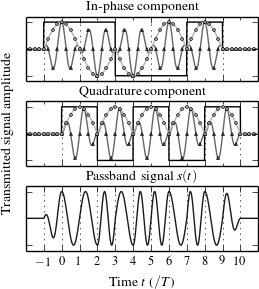
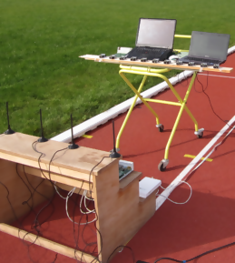
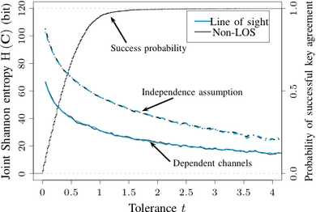

Matthias Wilhelm
I'm currently a Ph.D. student in the Department of Computer Science at the Technical University of Kaiserslautern, Germany, supervised by Jens B. Schmitt.
I'm interesting in physical layer security mechanisms, software-defined radio technology, and the effects of interference and jamming on wireless communications.
List of Research Projects
Reception of Concurrent Transmissions in Wireless Sensor Networks (2013–2014)
|
When several senders transmit packets simultaneously their signals collide at the receiver, typically rendering the transmissions unusable. However, under certain circumstances, one or even all packets in a collision may be received successfully. In this project we identify the preconditions for successful reception, analyzing the reasons for success using a physical layer model of the interference channel, and validate our predictions by simulation and experiments. For more information, visit the project page. |
 |
WiFire — A Firewall for Wireless Networks (2010–2013)
|
Securing wireless sensor networks (WSNs) is a hard problem. In particular, network access control is notoriously difficult to achieve due to the inherent broadcast characteristics of wireless communications: an attacker can easily target any node in its transmission range and affect large parts of a sensor network simultaneously. In this project, we explore the feasibility of using a distributed guardian system to protect a WSN based on physically regulating channel access by means of selective interference. The guardians are deployed alongside a sensor network, inspecting all local traffic, classifying packets based on their content, and destroying any malicious packet while still on the air. In that sense, the system tries to gain "air dominance" over attackers. A key challenge in implementing the guardian system is the resulting real-time requirement in order to classify and destroy packets during transmission. We have developed a USRP2 software radio based guardian for IEEE 802.15.4 that meets this challenge; using an FPGA-based design we can even check for the content of the very last payload byte of a packet and still prevent its reception by a potential victim mote. For more information, visit the project page. |
 |
Wireless Key Generation in Wireless Sensor Networks (2009–2010)
|
Key management in wireless sensor networks faces several unique challenges. The scale, resource limitations, and new threats such as node capture suggest the use of in-network key generation. However, the cost of such schemes is often high because their security is based on computational complexity. Recently, several research contributions justified experimentally that the wireless channel itself can be used to generate information-theoretic secure keys. By exchanging sampling messages during device movement, a bit string is derived known only to the two involved entities. Yet, movement is not the only option to generate randomness: the channel response strongly depends on the signal frequency as well. In this project, we introduce a key generation protocol based on the frequency-selectivity of multi-path fading channels. The practical advantage of this approach is that it does not require device movement during key establishment. Thus the frequent case of a sensor network with static nodes is supported. We show the protocol's applicability by implementing it on MICAz motes, and evaluating its robustness and security through experiments and analysis. The error correction property of the protocol mitigates the effects of measurement errors and temporal effects, giving rise to an agreement rate of over 97%. For more information, visit the project page. |
 |
List of Publications
- 2014
- Michael Spuhler, Domenico Giustiniano, Vincent Lenders, Matthias Wilhelm, and Jens B. Schmitt. Detection of Reactive Jamming in DSSS-based Wireless Communications. IEEE Transactions on Wireless Communications, accepted for publication on December 20, 2013. BibTeX
- 2013
- Matthias Wilhelm, Ivan Martinovic, and Jens B. Schmitt. Secure Key Generation in Sensor Networks Based on Frequency-selective Channels. IEEE Journal on Selected Areas in Communications, 31(8):1779–1790, September 2013. BibTeX
- Matthias Wilhelm, Vincent Lenders, and Jens B. Schmitt. An Analytical Model of Packet Collisions in IEEE 802.15.4 Wireless Networks. Technical Report arXiv:1309.4978. TU Kaiserslautern, Germany, August 2013. BibTeX
- Matthias Wilhelm, Ivan Martinovic, Jens B. Schmitt, and Vincent Lenders. Air Dominance in Sensor Networks: Guarding Sensor Motes using Selective Interference. Technical Report arXiv:1305.4038. TU Kaiserslautern, Germany, May 2013. BibTeX
- Domenico Giustiniano, Vincent Lenders, Jens B. Schmitt, Michael Spuhler, and Matthias Wilhelm. Detection of Reactive Jamming in DSSS-based Wireless Networks. In Proceedings of the 6th ACM Conference on Security and Privacy in Wireless and Mobile Networks (WiSec '13), pages 43–48. ACM, April 2013. BibTeX
- 2012
- Simon Eberz, Martin Strohmeier, Matthias Wilhelm, and Ivan Martinovic. A Practical Man-In-The-Middle Attack on Signal-based Key Generation Protocols. In Proceedings of the 17th European Symposium on Research in Computer Security (ESORICS '12), pages 235–252. Springer, September 2012. BibTeX
- Matthias Wilhelm and Jens B. Schmitt. Interference Scripting: Protocol-aware Interference Generation for Repeatable Wireless Testbed Experiments. In Proceedings of the 4th Annual Wireless of the Student, by the Student, and for the Student Workshop (S3), pages 21–23. ACM, August 2012. BibTeX
- Matthias Wilhelm, Jens B. Schmitt, and Vincent Lenders. Practical Message Manipulation Attacks in IEEE 802.15.4 Wireless Networks. In MMB & DFT 2012 Workshop Proceedings, pages 29–31. TU Kaiserslautern, Germany, March 2012. BibTeX
- 2011
- Matthias Wilhelm, Ivan Martinovic, Jens B. Schmitt, and Vincent Lenders. WiSec 2011 Demo: RFReact—A Real-time Capable and Channel-aware Jamming Platform. SIGMOBILE Mobile Computing and Communications Review, 15(3):41–42, November 2011. BibTeX
- Matthias Wilhelm, Ivan Martinovic, Jens B. Schmitt, and Vincent Lenders. WiFire: A Firewall for Wireless Networks. In Proceedings of the ACM SIGCOMM 2011 Conference on Applications, Technologies, Architectures, and Protocols for Computer Communications (SIGCOMM '11), pages 456–457. ACM, August 2011. BibTeX
- Matthias Wilhelm, Ivan Martinovic, Jens B. Schmitt, and Vincent Lenders. Short Paper: Reactive Jamming in Wireless Networks—How Realistic is the Threat? In Proceedings of the 4th ACM Conference on Wireless Network Security (WiSec '11), pages 47–52. ACM, June 2011. BibTeX
- 2010
- Matthias Wilhelm, Ivan Martinovic, Ersin Uzun, and Jens B. Schmitt. SUDOKU: Secure and Usable Deployment of Keys on Wireless Sensors. In Proceedings of the 6th Annual Workshop on Secure Network Protocols (NPSec '10), pages 1–6. IEEE, October 2010. BibTeX
- Matthias Wilhelm, Ivan Martinovic, and Jens B. Schmitt. Key Generation in Wireless Sensor Networks Based on Frequency-selective Channels – Design, Implementation, and Analysis. Technical Report arXiv:1005.0712. TU Kaiserslautern, Germany, May 2010. BibTeX
- Matthias Wilhelm, Ivan Martinovic, and Jens B. Schmitt. Secret Keys from Entangled Sensor Motes: Implementation and Analysis. In Proceedings of the 3rd ACM Conference on Wireless Network Security (WiSec '10), pages 139–144. ACM, March 2010. BibTeX
- 2009
- Matthias Wilhelm, Ivan Martinovic, and Jens B. Schmitt. Light-weight Key Generation based on Physical Properties of Wireless Channels. In Proceedings of 11. Kryptotag der Gesellschaft für Informatik e.V. (11. Kryptotag), page 4. University of Trier, Germany, November 2009. BibTeX
- Matthias Wilhelm, Ivan Martinovic, and Jens B. Schmitt. On Key Agreement in Wireless Sensor Networks based on Radio Transmission Properties. In Proceedings of the 5th Annual Workshop on Secure Network Protocols (NPSec '09), pages 37–42. IEEE, October 2009. BibTeX
- Ivan Martinovic, Paul Pichota, Matthias Wilhelm, Frank A. Zdarsky, and Jens B. Schmitt. Bringing Law and Order to IEEE 802.11 Networks – A Case for DiscoSec. Pervasive and Mobile Computing, 5(5):510–525, October 2009. BibTeX
- Matthias Wilhelm. Implementation and Analysis of a Key Generation Protocol for Wireless Sensor Networks. M.Sc. Thesis, Department of Computer Science, TU Kaiserslautern, Germany, September 2009. BibTeX
- 2008
- Ivan Martinovic, Paul Pichota, Matthias Wilhelm, Frank A. Zdarsky, and Jens B. Schmitt. Design, Implementation, and Performance Analysis of DiscoSec – Service Pack for Securing WLANs. In Proceedings of the 9th IEEE International Symposium on a World of Wireless, Mobile, and Multimedia Networks (WOWMOM '08), pages 1–10. IEEE, June 2008. BibTeX
- Ivan Martinovic, Frank A. Zdarsky, Matthias Wilhelm, Christian Wegmann, and Jens B. Schmitt. Wireless Client Puzzles in IEEE 802.11 Networks: Security by Wireless. In Proceedings of the 1st ACM Conference on Wireless Network Security (WiSec '08), pages 36–45. ACM, March 2008. BibTeX
Random CV Items
- 2012
- Graduate 2nd Place in ACM Student Research Competition Grand Finals 2012 for my entry "WiFire—A Guardian Angel for Wireless Networks" (San Francisco, June 2012)
- Scholarship from the Technical University of Kaiserslautern (2012–2014)
- 2011
- ACM Student Research Competition Graduate 1st Place at ACM SIGCOMM 2011 for my demo "WiFire—A Firewall for Wireless Networks" (Toronto, Aug. 2011)
- 2010
- EWSN 2010/CONET M.Sc. Academic Award for my master's thesis (Coimbra, Feb. 2010)
- 2009
- Scholarship from the Department of Computer Science of the Technical University of Kaiserslautern (2009–2011)
- Diplom Technoinformatik (M.Sc. in CS/EE) from the Technical University of Kaiserslautern (Sept. 2009)
Contact
Matthias Wilhelm
| Address: | Weißenburgstr. 2, 67659 Kaiserslautern |
| web＠mwil.me | |
| Phone: | 0170/1163246 |